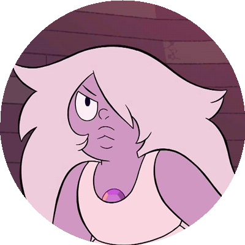

First Situation
Inside Amethyst's endless and messy room, she grieves over her own past. Her insecurity about physical imperfection consumes her. Realizing this, Rose's stone shines on the door, creating a mirage of our character's worst possible enemy, a copy of herself, but with a perfect appearence. Impulsive as she is, Amethyst, will:
